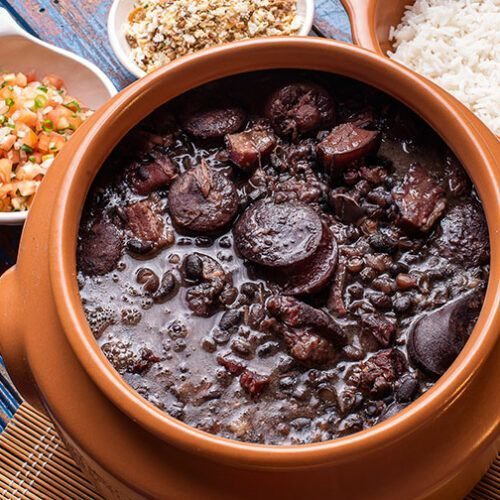

Feijoada

Description
Feijoada é uma designação comum dada a pratos da culinária de regiões e países lusófonos como Portugal, Brasil,
Angola, Moçambique, Timor-Leste e Macau. Consiste num guisado de feijão, normalmente com carne, e quase sempre
acompanhado com arroz.
Ingredientes
- 1 kg de feijão preto
- 100g de carne seca
- 70 g de orelha
- 70 g de rabo de porco
- 70 g de pé de porco
- 100 g de costelinha de porco
- 50 g de lombo de porco
- 100 g de paio
- 150g de linguiça portuguesa
- Tempero:2 cebolas grandes picadinhas
- 1 maço de cabolinha verde picadinha
- 3 folhas de louro
- 6 dentes de alho
- Pimenta do reino a gosto
- 1 ou 2 laranjas
- 40 ml de pinga
- Sal a gosto
Modo de preparo
- Coloque as carnes de molho por 36 horas ou mais, vá trocando a água várias vezes,
se for ambiente quente ou verão, coloque gelo por cima ou em camadas frias.
- Coloque para cozinhar passo a passo: as carnes duras, em seguida as carnes moles.
- Quando estiver mole coloque o feijão, e retire as carnes.
- Finalmente tempere o feijão.